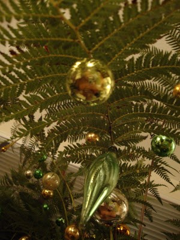
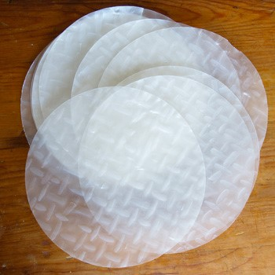

Description
Commonly known as rice-paper plant, Tetrapanax are evergreen shrub that grows 3 to 7 meters tall.
Tetrapanax leaves
Tetrapanax plant
Uses
The following are some uses of Tetrapanax:
- Traditional Chinese medicine
- Promotes urination and drains damp heat
- Promotes lactation
- Ornamental 
- Pith from the stem is used to make rice paper 
Market Value
- Php 8 per kilogram.
- Endemic to Taiwan but widely cultivated in East Asia and in other tropical regions.